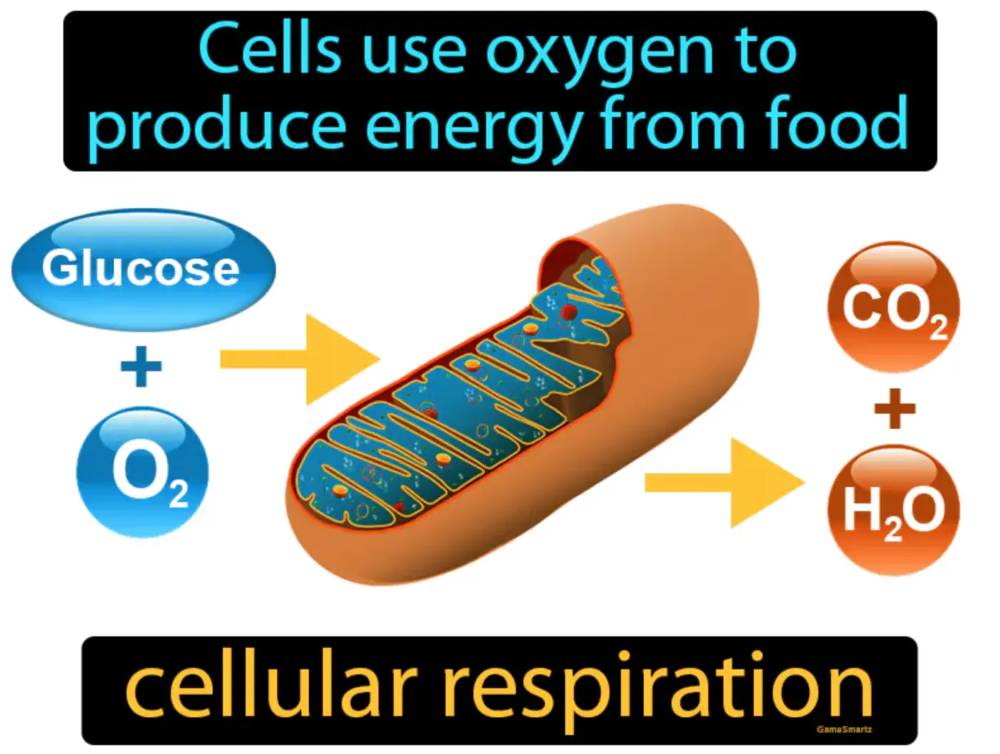
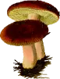
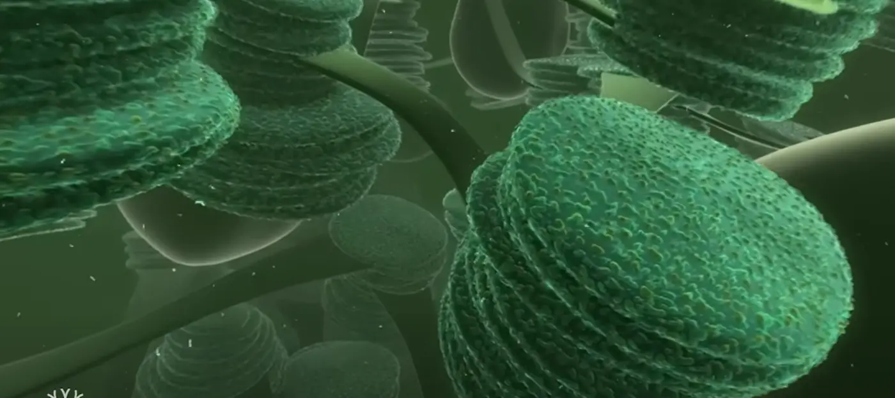
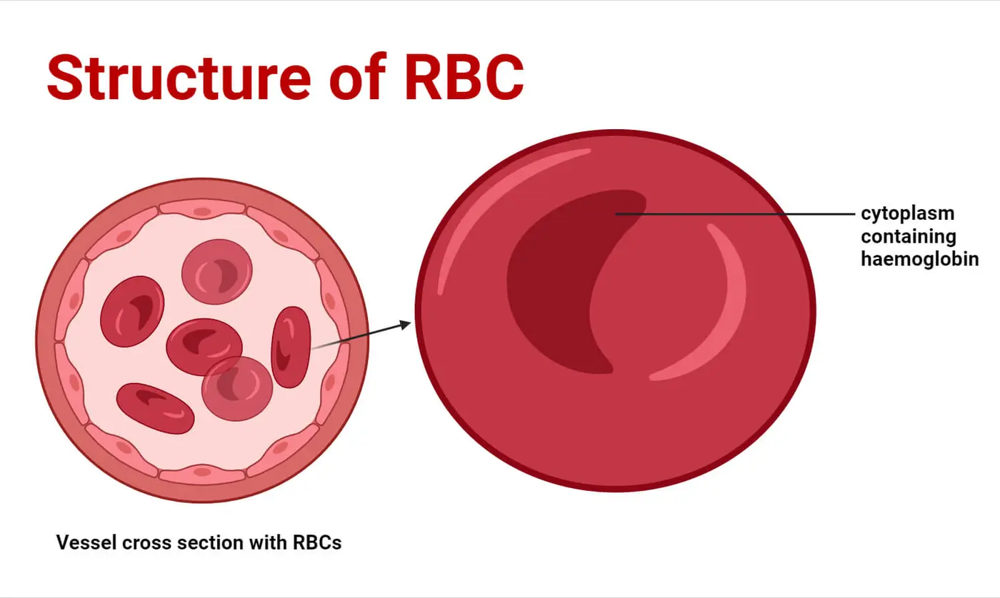
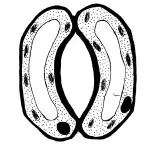
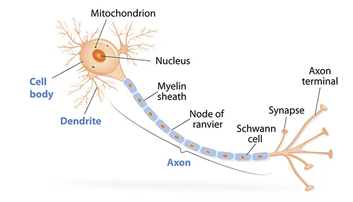

What you need to know (specification)
- 2.2describe cell structures, including the nucleus, cytoplasm, cell membrane, cell wall, mitochondria, chloroplasts, ribosomes and vacuole
- 2.3describe the functions of the nucleus, cytoplasm, cell membrane, cell wall, mitochondria, chloroplasts, ribosomes and vacuole
- 2.4know the similarities and differences in the structure of plant and animal cells
What are cells? 2.2
- All living organisms are made of cells.
- The simplest organisms are made of one cell (unicellular).
- Multicellular organisms such as animals and plants are more complex: different cells are specialised to do particular jobs.
- Inside cells are smaller structures called organelles, each with a specific function.


Animal and plant cells 2.2
Animal cell
Plant cell
These are generalised cells: they show the main parts. Real cells vary in shape and size.
What each part does 2.3
Nucleus
- Contains the genetic information and controls the cell’s activities
- Genetic information is in chromosomes, made of DNA
- Sections of chromosomes called genes decide what substances the cell makes

Cell membrane
- A boundary between the cytoplasm and the outside
- Controls what enters and leaves the cell
- It is partially permeable: only some substances can pass through
Cytoplasm
- Watery, jelly-like liquid that holds the organelles and enzymes
- Many of the cell’s chemical reactions happen here
- These are called metabolic reactions
Mitochondria
- Where aerobic respiration happens
- Release energy for the cell
- Cells that need lots of energy, like muscle cells, have many mitochondria

Ribosomes
- Very small, found in the cytoplasm
- Make proteins (protein synthesis)
- Which proteins they make is decided by the genes in the nucleus
Chloroplasts plant cells only
- Contain chlorophyll, a green pigment
- Absorb light energy to make food
- This is photosynthesis
Cell wall plant cells only
- Made of cellulose (not living)
- Strengthens the cell and keeps its shape
- It is freely permeable: substances pass through easily

Vacuole plant cells only
- Filled with cell sap: water, dissolved sugars and mineral ions
- Helps keep the cell’s shape (support by pressure)
- Plant cells have a large permanent vacuole

VideoInside plant cellsyoutube.com ↗Comparing animal and plant cells 2.4
| Part | Animal cell | Plant cell |
|---|---|---|
| Nucleus | ✓ | ✓ |
| Cell membrane | ✓ | ✓ |
| Cytoplasm | ✓ | ✓ |
| Mitochondria | ✓ | ✓ |
| Ribosomes | ✓ | ✓ |
| Chloroplasts | ✗ | ✓ |
| Cell wall | ✗ | ✓ |
| Permanent vacuole | ✗ | ✓ |
Both have a nucleus, cell membrane, cytoplasm, mitochondria and ribosomes. Only plant cells have chloroplasts, a cellulose cell wall and a large permanent vacuole.
Specialised cells
These generalised cells show the main features, but most cells in plants and animals are specialised to do a particular job. You will meet these later in the course:



Practice
True or false?
Ribosomes make proteins.
Aerobic respiration takes place in the mitochondria.
The plant cell wall is made of chitin.
The cell membrane is freely permeable.
The cytoplasm is where many metabolic reactions take place.
Chlorophyll contains chloroplasts.
Organelles are larger than cells.
Exam-style question: complete the table [6]
| Organelle | Function | Plant or animal cell |
|---|---|---|
| Mitochondria | …… | Both |
| …… | Protein synthesis | Both |
| …… | Photosynthesis | …… |
| …… | Controls what enters and leaves the cell | …… |
Show mark scheme
Mitochondria: (aerobic) respiration · Ribosome · Chloroplast, plant · Cell membrane, both
Summary: every part
| Part | Function | Plant or animal cell |
|---|---|---|
| Mitochondria | (Aerobic) respiration: releases energy | Both |
| Ribosome | Protein synthesis | Both |
| Chloroplast | Photosynthesis | Plant |
| Cell membrane | Controls what enters and leaves the cell | Both |
| Cytoplasm | Jelly-like liquid that fills the cell; many of the cell’s chemical reactions happen here | Both |
| Cell wall | Made of cellulose; strengthens the cell and supports it | Plant |
| Nucleus | Contains genetic material (DNA) that controls the cell’s activities | Both |
| Vacuole | Filled with cell sap; helps keep the cell’s shape | Plant (permanent) |